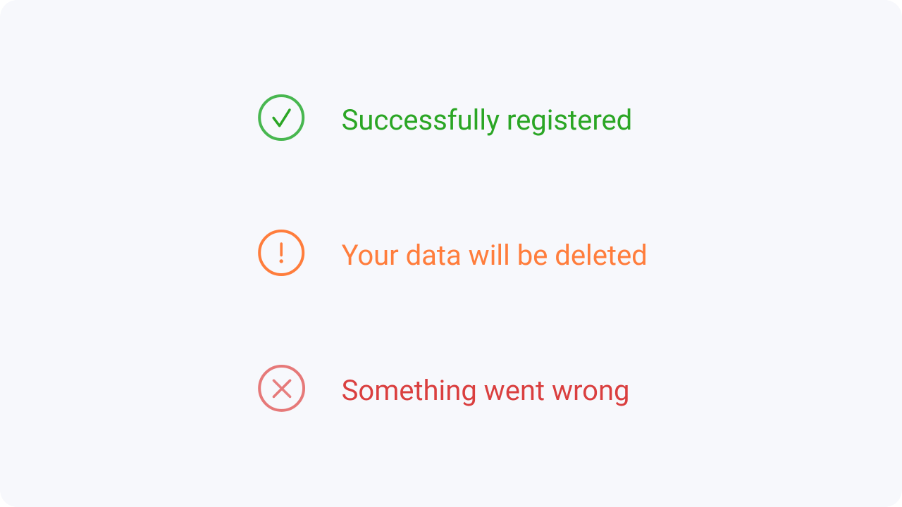

Different studies aim to determine how color affects our day to day decisions. All colors evoke
emotion
and feeling in different ways. By using colors strategically, you can make your audience
feel a certain
way about your brand or product.
the personality of your designs. They can attract users, and they can better communicate your message. Colors can set the basic mood, tone, concept, and connotation for a brand or product. Learn here about the color psychology, the different color contrasts and the usage of colors.
Colors can speak in ways that are every bit as powerful as language. They can reflect the personality of your designs. They can attract users, and they can better communicate your message. Colors can set the basic mood, tone, concept, and connotation for a brand or product.
The 60 – 30 – 10 is a very simple rule for creating well balanced color palettes. The idea is simple, when you
choose a new color palette, the 60% of the palette should be dedicated to one color. Usually, it’s a neutral
color like white. Another complementary color makes up 30% of the palette, and a third accent color is used
for the remaining 10% of the design.
Avoid using gray and also black without any saturation. Always try to add a little saturation
to your
color. Subconsciously, it will look more natural and familiar to users.
Some colors go well together, while others don’t. There are definitive rules for how they interact, which are best observed on a color wheel. You should be aware of these methods, but it is not necessary to do so.

Denotative colors have a meaning. You need
to come up with a color scheme for the states
of your
app or website, such as error, success,
and warning. The most common colors used
for these
purposes are red, orange, and green.
Let’s say one of your brand colors is red. If so,
you
should not use it for error messages.
Besides aesthetics, colors are the creators of emotions and associations. The meaning of colors can change depending on culture and circumstances. That’s why you see black and white fashion stores. They want to look elegant and sublime and want the user to focus on the clothes
We like to play with colors and tones at the beginning of our design process, but this is a step that should
only happen later in the design process. Focus on the layout of your design first, as well as the spacing and
arrangement of elements.
This will save you a lot of time.


If you want to learn more about color psychology, go here.


CMYK is the color space for printed designs and RGB or HEX (hexadecimal codes) are suitable for digital
designs.
So avoid using CMYK color space for your digital work. Rather use HEX colors. They represent the
color space on the web with great accuracy and programming compatibility.

Color saturation is what you need to pay attention to. A scheme that consists only of highly saturated colors will overwhelm the eye. Use one saturated color and two less saturated colors.